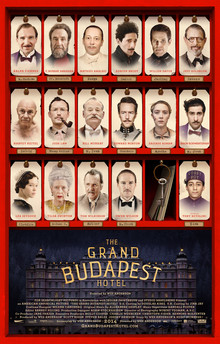

Wes Anderson
2014
99 minutes
TITLE: The Grand Budapest Hotel TEXT PLACEHOLDER 190
This is the big Wes Anderson one. But it also belongs to Ralph Fiennes, which is how it's going to cross your belated wife's radar and force you to watch a good chunk of it and be sufficiently charmed to realize that you've been a stubborn idiot about not watching his other films. Or maybe that was in the past, depending on when you are reading this. In any case, this is going to force you to sit for more than twenty minutes and give him a chance and conclude the other shit might be worth watching after all and maybe you should give this film your full attention someday.
Your wife wasn't as much of a film person as you were. She loved going to film festivals and revivals with you, but she was unlikely to give much of a shit about anything being trendy or having a reputation. She had some peculiar quirks about which directors she liked, of course. She had a frustrating hatred for Martin Scorsese and a wary appreciation for Francis Ford Coppola because of her Italian-American heritage. She was an Italian citizen and her family had actual mob connections despite their unusual attempts to downplay this. Her mobbed-up family members were "the good ones" and only mildly involved in innocent ways, not like the goombahs usually stereotypically portrayed on the big screen. And many of the mob movies you dragged her to ended up being somewhat derided as "shit boys like" by her. She shared some of your same cynical misgivings about Wes Anderson, but Ralph Fiennes could do no wrong.
Your wife had an uncanny knack for picking out bit actors in film by their faces, a knack that you, being nearly face-blind, did not share. You were well into adulthood before you realized that the same woman played the lead in Mary Poppins and The Sound of Music, and when you leapt to this conclusion during a PBS-viewing of the latter with your wife, she was incredulous at first and then nearly laughed herself sick when she realized you were serious about not realizing this simple fact.
In any case, you're going to end up loving the part of this film you watch before watching it from the beginning. And now that you have a chance to do so, you're going to love it even more. It's always good to have someone else to introduce you to new things, even if it's for dubious reasons that you wouldn't necessarily agree with. Just go with it, and keep an open mind from here on out. Your wife is gone now, but other friends will have dumb suggestions for films you might like, and it's not a bad idea to solicit those ideas occasionally if you're looking for something to watch next.
Time to choose something different: